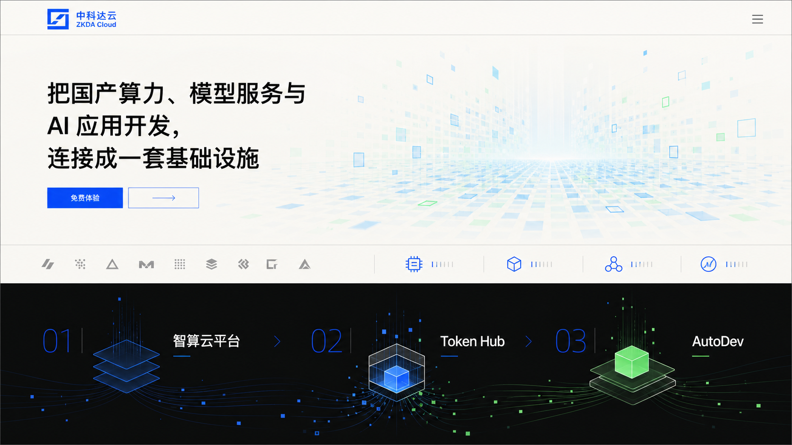
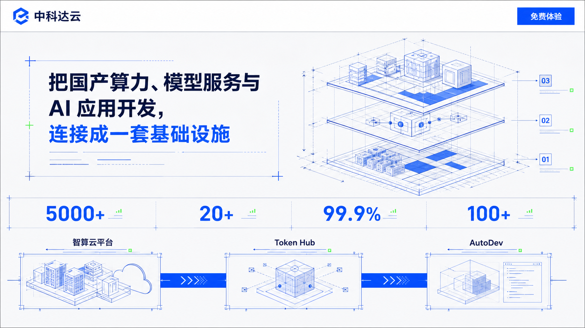
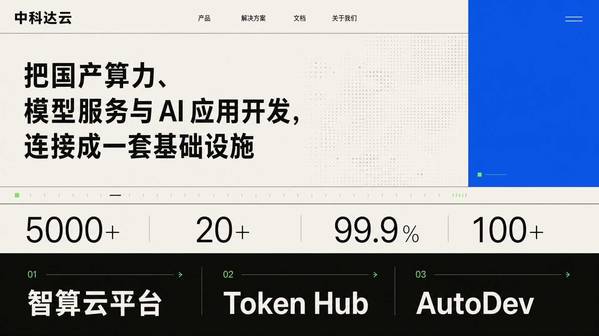
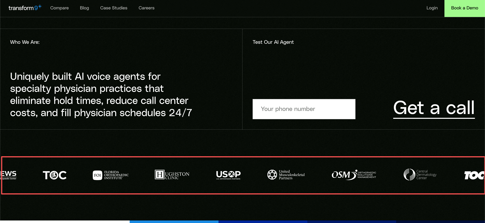

推荐 · 当前网站使用
B+C 组合已选定
C 建立全站秩序，B 提供工程插图语言
真实网页正在采用暖象牙纸色、编辑式中文大标题、超大蓝色数据、极少绿色信号和原创蓝图线稿。生成效果图仍只用于方向判断；正式页面继续使用真实 HTML、已上传 Logo 和批准数据。
已选视觉方向
B 的工程图语言 + C 的精密编辑系统



- 基础系统 · C
- 暖象牙与冷灰纸面、近黑正文、品牌蓝竖向色面、超大数据、非对称留白和开放式列表
- 插图语言 · B
- 本站原创蓝图 SVG 使用结构线、节点和测量刻度；只作为装饰，不承载产品事实或参数
- 交互参考
- Transform9 用于第 7 步过渡、滚动与交互节奏；本轮只实现静态视觉及 Hover / Focus，不复制其代码或完整构图
- 当前预览
- 首页、产品页、方案页、服务页、定价页、资源页和关于页已共用同一套视觉规则
- Figma 调整
- 正式首页首屏已再次按节点 2:53 逐项校准布局、常规字重、行高、近黑 / 品牌蓝色值和双栏对齐；主画板 64:34873 又用于核对纵向节奏：Logo 带桌面高 165px，产品体系与平台能力上方各保留 260px，窄屏按同一规则收敛；产品轮播内容与平台卡片交互未改
A / B / C 三张图继续作为选择历史保留。生成图中的 Logo、图标、线稿与排版细节都不是正式资产；官网使用自己的 SVG Logo、原创蓝图线稿、真实 HTML 文字和四组批准数据。
排版规则
同一套品牌系统，不把所有页面排成同一个模板
- 首页锁定区
- 首屏、卡商 Logo 循环、规模与稳定性、产品体系、平台能力五区保持已确认内容与结构，不在本轮改动
- 首页后续叙事
- 按最新版 v1.1 收敛为核心优势、三类专业服务、开放生态、关于我们、最终 CTA 与完整页脚；重复的一云多芯 / 迁移、能力证明边界和重复专家服务区已移除
- 产品页
- 适用对象电脑端三项单排，能力较多时使用两列开放列表；产品位置与接入路径缩窄阅读
- 解决方案
- 问题背景三项单排、实施路径四步单排，范围边界缩窄；迁移占位图电脑 16:9、手机 4:5
- 专家服务
- 适用条件三项单排，服务范围改为错位纵向列表，协作流程四步单排
- 定价与资源
- 不使用价格卡片；方案构成与状态信息横排，价格边界和帮助说明缩窄阅读
- 关于我们
- 使命与愿景左右展开，发展历程使用纵向时间轴，四位团队成员电脑单排；邮件、电话和地址合并在页面结尾
- 手机
- 900px 以下横向分栏恢复单列，按钮整行，流程转纵向；长标题、邮箱和电话允许自然换行
- 未改变
- 导航入口顺序与下拉内容、定价事实边界、首页浅色动效和迁移占位图决定
字体系统
英文与数字使用 Roboto，编号使用 Roboto Mono
- 英文与普通数字
- 导航、标题、正文中的英文，以及 5,000+、20+、99.9%、100+ 等数据统一使用 Roboto
- 编号类数字
- 导航下拉编号、01–06 内容索引、公开数据 01–04、团队编号与时间轴年份统一使用 Roboto Mono
- 中文
- 继续使用原有系统中文无衬线回退，不改变中文标题和正文的字形选择
- 加载回退
- Google Fonts 官方 CSS 加载失败时自动回退到系统无衬线与系统等宽字体；页面内容和布局保持完整，真实字体渲染等待浏览器安全校验恢复后复测
首屏后新增内容
浅色 Logo 带连续循环，标题区已移除

- 展示名单
- 平头哥、昇腾、昆仑芯、海光、沐曦、壁仞、寒武纪、燧原、天数智芯、翰博半导体、登临、摩尔线程
- 背景
- 与首页首屏一致的暖白浅色，不使用参考站黑底
- 当前素材
- 用户提供的 6 个 SVG 与 6 个透明 PNG 已复制到项目素材目录并全部加载；原始文件保持不动
- 标题区域
- 公开首页已完全移除，只在审阅页保留本次变更说明
- 动态处理
- 约 32 秒连续循环；按最新要求移除“暂停循环”按钮和隐藏复选框，鼠标停留仍会暂停；开启减少动画后停止自动移动并允许横向浏览
- 事实边界
- 只称“国产芯片生态”，不声称这些品牌是客户、投资方或已确认合作伙伴
公开数据区交互
四栏等宽，悬停或聚焦单栏展开
- 电脑默认
- 四个蓝色面板等宽，仅显示 01–04 索引；不会把某一组数据永久放大
- 鼠标 / 键盘
- 悬停或键盘聚焦某一栏时，该栏展开并显示数据，其余三栏收窄；移出或失焦后恢复等宽
- 820 与 1920
- 代码已统一为横向四栏手风琴；820 只调整展开栏与收窄栏比例，不切换成 2×2，等待本地浏览器安全检查恢复后补记实测
- 纵向模式
- 720px 及以下使用纵向手风琴，布局、折叠样式和 JavaScript 共用同一断点；默认只展开 01，点击 01–04 切换；无 JavaScript 时四组全部展开
- 四张配图
- 纳管 GPU 卡、支持芯片厂商、系统可用性、服务企业均已使用用户提供的对应图片；展开时以 cover 满版裁剪，不保留上下左右空白。静态检查通过，等待浏览器安全校验恢复后补记实测
- 数据字号
- 第一张 5,000+ 字号保持不变；20+、99.9%、100+ 已删除单独缩小规则，字号、字重、行高和字距与第一张一致
- 左侧像素插图
- 已由 metrics-pixel.svg 替换为用户提供的 970×664 metrics-pixel.jpg；仍为不承载信息的装饰图
- 事实边界
- 只使用 5,000+、20+、99.9%、100+；录屏中的示例数据、英文文案和人物图片未进入网站
三层产品关系
Figma 浅色产品体系轮播
- Figma 节点
- 电脑三状态来自 33:30855、38:32066、38:32238；移动布局来自 47:34237
- 电脑交互
- 右侧上一项 / 下一项箭头循环切换智算云平台、Token Hub 和 AutoDev；键盘左右方向键提供同等切换；按用户 7 秒录屏使用约 520ms 原位交叉淡化，不让标题和网格横向移动
- 响应适配
- 按用户 31 秒录屏：721px 以上使用约 30% 左图 / 70% 右文并连续收缩，双箭头由 100px 缩到 76px；720px 以下使用标题、62px 控制带、3:4 满宽动图、说明链接和两列能力标签
- 序号位置
- 电脑 / 平板的 01 / 03 固定在右侧内容栏左上角；移动端移入动图上方控制带左侧，双箭头位于右侧，不再覆盖 GIF
- 卡商 Logo
- 第二部分主轨道与无缝克隆已整组替换为用户提供的 12 份黑色 PNG；统一高度 35px、宽度保持原比例，等待真实浏览器安全校验恢复后复测连续衔接
- 详情入口
- 每个状态分别进入现有智算云平台、Token Hub、AutoDev 详情页
- 详情页临时范围
- 三个产品详情页已按最新要求只保留全站导航和各自第一屏；后续正文与页脚暂时不显示，完整内容仍保留在内部内容源中，等待浏览器复测
- 素材
- 智算云平台、Token Hub、AutoDev 三张循环 GIF 已按用户文件一一替换并保存到项目，不依赖临时外部 URL
- 文案核对
- 标题、说明、详情入口和能力栏逐项按三个桌面 Figma 节点回写；500K+、10K+、23、99% 与 99.9% 为用户本轮明确要求使用的设计稿文案，不与首页公开数据区混用
- 无程序回退
- 无 JavaScript 时隐藏切换按钮并依次完整显示三个产品，不丢失内容与详情链接
- 减少动画
- 系统启用减少动画时取消交叉淡化，直接更新产品状态
平台能力区重构
Figma 五层基线 + AutoDev 第六层
- Figma 节点
- 前五层严格使用文件 6W3cSUHu3kZvwWmT9kYbmC 的节点 60:34731；第六层 AI 驱动开发 / AutoDev 为用户随后明确补充
- 桌面布局
- 浅色两等分：左侧“覆盖 AI 全生命周期”与智能运维 / 安全 / 可观测固定；右侧六张卡使用相同展开高度，已浏览卡只露出等高标题条
- 桌面交互
- 未来卡片先位于屏幕下方，滚动时约 620ms 逐张上移覆盖前一张；01–05 下方保留逐步缩小的浅色留白，到 06 出现后堆叠才填满固定区域
- 移动端
- 六张卡默认完整展开并纵向排列；滚动时后一卡逐张覆盖前一卡正文，只留下约 74px 标题条。06 到达第五条历史标题后的卡位便停止单独移动，继续滚动时完整六层堆叠整体离场；无 JavaScript 或减少动画时取消 sticky，等待 390px 实测
- 回退
- 无 JavaScript 或开启减少动画时取消长滚动与卡片压缩，六项标题、说明和素材全部按顺序可读
- 浏览器实测
- “规模与稳定性”区块上下横线已移除，内部四组数据结构不变；源码、素材和语法检查已完成，1920 / 820 / 390 的真实滚动与控制台复测等待浏览器安全校验恢复
内页临时范围
12 个内页当前统一显示缺省页
解决方案、专家服务、定价、资源和关于我们页面的原正文暂时隐藏。页面 URL 与全站导航保持不变，访问后只显示“内容正在准备中”和返回首页入口；这些页面按你的要求暂时不做内容检查或更新。
- 解决方案
- 4 页已切换为缺省页
- 专家服务
- 3 页已切换为缺省页
- 定价 / 资源 / 关于
- 1 + 3 + 1 页已切换为缺省页
- 原内容
- 内部内容源继续保留，当前不复核、不改写
页面目录已修订
联系信息现在属于“关于我们”
原 /pages/contact.html 已删除，公开页面从 17 个收敛为 16 个。当前关于我们页已按最新要求切换为缺省页；既有 /pages/about.html#contact 链接仍能打开该缺省页，不再展示原联系内容。
- 关于内容
- 使命、愿景、四项价值观、五个发展节点和四位核心团队成员已经写入
- 页面数量
- 17 页 → 16 页
- 价格数据
- 尚未提供，不会虚构
网页变化
你现在可以看到什么
- 第 3 步已由
next:content批准并锁定，Git 恢复点为167d506。 - 首页按“定位—产品关系—差异—能力—方案—信任—行动”填入真实内容。
- 3 个产品详情页当前只显示各自第一屏；解决方案、专家服务、定价、资源和关于我们共 12 页统一显示缺省页。所有原正文继续保存在内部内容源中。
- 登录、免费体验、邮件、电话和全部本地页面链接保持真实可用。
- 没有添加客户名称、案例结果、价格、接口参数、兼容清单或未经确认的产品截图。
- 已观察 Transform9+ 真实首屏的明暗呼吸和鼠标响应；根据你的最终分层，首页现在由 WebGL 渐变 / 噪声 / 轻形变、独立数据格 Canvas 和 GSAP DOM 入场组成；鼠标本身不带圆形光晕。
- 首页首屏正方形色块不再绘制边框，覆盖首屏的横纵结构网格线也已删除。
- 根据最新反馈，首页首屏从深色改为暖白底、浅蓝 / 浅青 / 浅绿色块与深色文字；品牌蓝用于标题重点和主要按钮，原有呼吸、随机峰值与鼠标扰动继续保留。
- 首屏后浅色循环带已改用用户提供的 12 份真实 Logo，并按最新截图反馈移除整块标题与素材说明。
- 首页原产品架构与产品总览仍合并为一个区块；当前按 Figma 改为可切换的浅色产品体系轮播，三个状态分别进入智算云平台、Token Hub 与 AutoDev 详情页。
首页第一屏新方向
保留参考机制，改为中科达云浅色版本
下列画面记录的是 2026-08-21 观察到的深色参考网站，只用于说明方块呼吸、随机峰值和鼠标响应。你在 2026-08-24 提出的浅色要求已覆盖本站此前的深色基调：当前首页使用暖白底与浅蓝、浅青、浅绿色块，不复制参考网站的深色画面、源码和精确参数。


- 当前色调
- 暖白偏灰底色、浅蓝 / 浅青 / 浅绿色块、深色文字；品牌蓝用于标题重点与主要按钮，顶部导航统一为白色
- 底层
- 原生 WebGL：4 个蓝 / 青 / 绿光场在原位附近缓慢漂移，叠加连续 Noise 与轻形变；独立 Ambient Blur 以 31s 呼吸
- 数据格
- 硬边 Canvas 2D 正方形矩阵；Color Pulse、White Spike、Dark Cut 和两类 Chain Event 随机低频发生；约 56% 微闪、37% 普通闪、7% 强闪
- 全员呼吸
- 所有当前亮起的格子都以自己的 1.5–4.6s 周期和相位缓慢抬亮、平滑达峰、缓慢回落；采用 smoothstep 呼吸曲线，不做基础格突然跳亮
- 相邻差异
- 格子按行列强制分配 4 档基础透明度；横向相邻差 1 档、纵向相邻差 2 档，即使同色也不会同透明度
- 五类状态
- 每格在呼吸暗谷重新抽取浅灰压暗、蓝、青、绿与白色短峰；仍保持约 58 / 27 / 8 / 5 / 2 的疏密关系，避免同时亮起过多
- 去同色聚类
- 允许偶发两格同色，但禁止水平 / 垂直连续 3 格、同色 2×2 和 L 形三格，不出现同时大片同色
- 事件规模
- 约 70% 单格、20% 双格、10% 三格；链内以 150–400ms 传播；单次彩色脉冲保持自身色域，基础格只在呼吸暗谷重新抽取五色，黑色不产生 Glow
- 截图校准
- 最新 Figma 节点使用约 120px 实体色块，页面越宽会自动增加列数；脉冲只改亮度、不放大实体格，前景柔焦和右侧扩散模糊继续与实体层分离
- 峰值层级
- 常态多数格子保持浅灰或低亮；少数蓝、青、绿提高饱和度，白色只约 2% 并作为彩色区域中的短促峰值
- 首屏构图
- 按 Figma 2:53 保持两行标题和底部信息区：电脑端顶部 78px、左右 36px、110px 常规字重与 122px 行高；所有宽度恢复“标题—弹性留白—底部信息区”，两部分贴首屏底边。最底部横线已按最新截图移除，内部顶部横线和双栏竖线保留；等待浏览器安全校验恢复后复测
- 鼠标揭示
- 已按最新参考图修正遮罩：核心可见格完整打开，约 18% 随机缺口继续保留；单格遮罩不再跨边界重复擦除，并已取消遮罩的 CSS Blur 与整体缩放，避免边缘亮、中间暗和格缝虚边。没有圆形探照灯、鼠标光晕或鼠标换色；等待真实浏览器复测
- 局部清晰
- 全屏环境柔化已移到实体数据格下方，数据格和无滤镜清晰层保持像素对齐；其上新增受控景深，鼠标中心完全高清，向外先过渡到约 8px、再到约 18px 柔化。宽羽化、随机缺口和逐格清晰层共同打散边界，不显示规则圆形窗口；手机与减少动画模式关闭该层，等待真实浏览器复测
- 离开后状态
- 鼠标离开首屏后保留最后坐标、约 72% 可见强度与约 68% 清晰层，随机事件继续偏向该区域，不会立即退回纯底色
- 稀有强调
- 首轮绿色脉冲后以 240–360ms 延迟触发邻格白色短峰；后续每 9–22s 低频出现，约 66% 绿色、34% 白色
- 延迟 Glow
- 独立 Canvas 在实体变化后 120–220ms 扩散；实体约 0.45s 到峰，Glow 约 0.6–0.75s 到峰，亮度先降而范围继续扩大
- 页面内容
- 真实导航、标题和按钮保持 DOM；GSAP 3.13.0 入场，加载失败时内容仍默认可见
- 动效周期
- 4 个光场 17 / 23 / 27 / 19s；Ambient Blur 31s；常规事件间隔 1.2–4.5s，稀有强调 9–22s；彩色实体 0.8–1.5s，白色 0.35–0.8s；Noise 持续；鼠标惯性约 1.1s
- 不复制
- Transform9+ 代码、Logo、文字、像素分布、布局比例、第三方场景与医疗内容
- 静态回退
- 减少动画或无 JavaScript 时显示浅色静态 DOM 色块；WebGL、实体格、Glow 或 GSAP 单独失败时仍保留其余可用层和完整内容
新增首页视觉参考
借鉴节奏、网格和对比，不复制素材与完整构图


网站文字读起来的感觉
四种写法，当前推荐第一种
技术密度更高
B｜工程说明型
统一纳管异构算力，贯通训练、推理与模型服务工程可信度更强，但首页更像产品手册。传播性更强
C｜品牌宣言型
让国产算力真正进入企业 AI 生产环境更短、更有记忆点，但需要后续内容补足细节。协作感更强
D｜共建顾问型
从第一张国产 GPU 到企业 AI 应用，我们与你一起搭建更温和，适合专家服务，但会削弱平台产品感。内容边界
哪些真实写入，哪些明确不猜
- 已经使用
- 三项产品关系、平台能力、四类方案、三项服务、四组数据、正式联系方式与登录链接
- 诚实保留
- 产品文档、API 文档和帮助中心没有外部地址，继续使用本地说明页
- 用户新提供
- 使命、愿景、价值观、2023—2026 发展历程和四位核心团队成员资料
- 没有添加
- 客户名称、Logo、案例结果、资质、团队照片、价格、项目周期、接口参数和兼容清单
图片决定
国产算力迁移页面暂时使用占位图
占位图会保留稳定的版面空间，并明确说明正式素材以后补充；当前生成候选只在内部记录中保留，不会复制到公开素材目录，也不会被页面加载。
- 首页
- 继续使用代码背景动效，不使用生成图片
- 国产算力迁移
- 保留固定比例文字占位，后续可替换为经过确认的正式素材
- 公开网站
- 不加载本批次的任何生成图片
全部页面
逐页打开检查排版
01 · 首页/index.html
02 · 智算云平台/pages/products/intelligent-computing-cloud.html
03 · Token Hub/pages/products/token-hub.html
04 · AutoDev/pages/products/autodev.html
05 · 国产算力迁移/pages/solutions/domestic-computing-migration.html
06 · 企业智算中心/pages/solutions/enterprise-intelligent-computing-center.html
07 · 企业大模型/pages/solutions/enterprise-large-model.html
08 · AI 应用开发/pages/solutions/ai-application-development.html
09 · 算子优化/pages/services/operator-optimization.html
10 · 数据治理/pages/services/data-governance.html
11 · MaaS 搭建/pages/services/maas-platform.html
12 · 定价/pages/pricing.html
13 · 产品文档/pages/resources/product-docs.html
14 · API 文档/pages/resources/api-docs.html
15 · 帮助中心/pages/resources/help-center.html
16 · 关于我们（含联系入口）/pages/about.html
显示检查
电脑和手机状态
- 电脑
- 16 页已在 1920×1080 逐页复查；新版关于我们在 2560×1440 保持使命双列、团队四人单排和清楚的联系入口
- 平板
- 1180×820 保留电脑横向节奏；820×1180 将使命、时间轴、团队和联系信息转换为单列
- 手机
- 16 页已在 390×844 逐页复查；新版关于我们无横向溢出，长邮箱正常换行，菜单按钮可见
Figma 首页、数据配图、导航与字体系统已同步
等待视觉浏览器复测
retry:visual-browser-qa四张数据配图、数据手风琴、全站 62px 白色导航、移动端整屏菜单与底部双操作栏，以及 Roboto / Roboto Mono 字体规则均已同步；静态检查通过。浏览器安全校验暂不可用，恢复并完成 1920 / 1180 / 820 / 390 复测后才重新开放 next:animation。